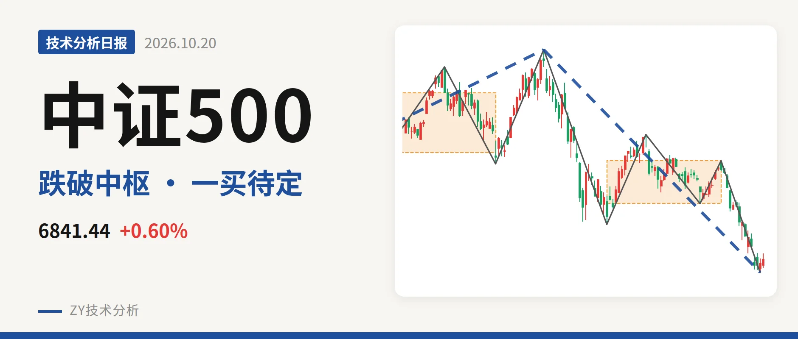
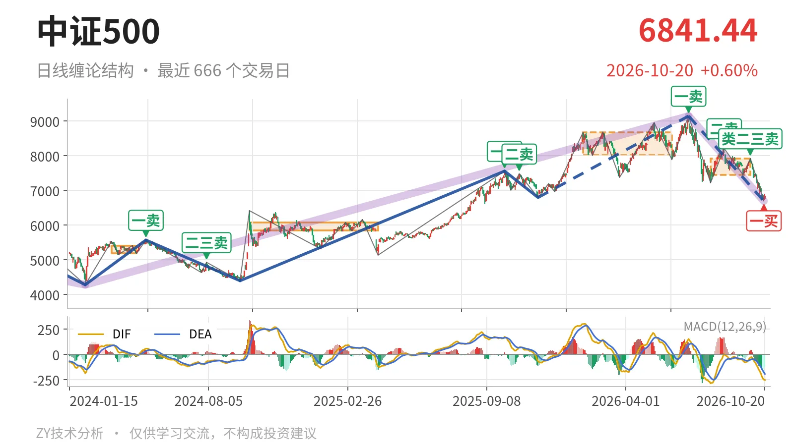
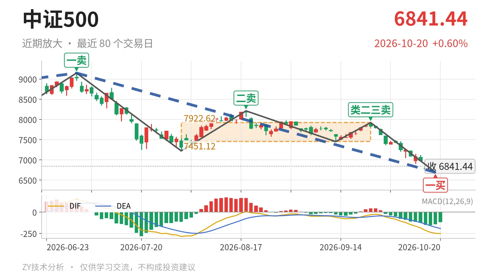

中证500｜跌破7451点，一买反抽看中枢下沿

最近日线中枢 7451.12—7922.62点，收盘位于中枢之下
一句话：最新价跌破最近中枢下沿，10月19日一买后反抽尚未成笔
📉 走势结构：日线下跌段还在延续
中证500日线仍处7月1日以来的下跌线段中，该线段没有结束。更大级别走势里，2026年7月1日至10月19日的下跌走势从9147.56点跌至6692.83点，跌约26.8%，也还在延续。2025年11月24日至2026年7月1日的上涨线段虽有9笔、尚未走完，但当前由7月1日以来的下跌段主导，这是偏弱的核心结构。

📍 中枢与位置：跌出7451点中枢，中枢下移
最新收盘6841.44点位于最近日线笔中枢（7月30日至9月22日，区间7451.12—7922.62点）下方，低于下沿约8.2%。该中枢中轴7686.87点，已经低于前一个尚未完成的中枢（2026年1月26日至6月8日，区间8014.66—8671.35点）中轴8343.00点，中枢明显下移。最新价跌出中枢后，回抽若不能回到7451点上方，结构上不排除三卖。
🎯 买卖点：10月19日一买出现，卖点逐级下压
日线笔级别最近一个买点是10月19日一买，位置6692.83点，所在9月22日至10月19日下跌笔已经结束。该一买后仅10月20日一根K线，反抽尚未成笔；后续若再创新低，这个一买只对应更小级别。7月1日一卖9147.56点、8月18日二卖8211.31点、9月22日类二三卖7922.62点，高点一个比一个低。最新价暂时未再创10月19日新低，一买后的反抽结构仍在。

📊 背驰：与7月1日下跌笔比，新低不新弱
日线笔一买的背驰依据，是比较9月22日至10月19日下跌笔与7月1日至7月30日下跌笔。前一段绿柱面积2687、DIF低点-285.2；后一段绿柱面积1071、DIF低点-248.9。价格低点从7221.95点下移至6692.83点，但绿柱面积缩小、DIF低点抬高，属新低不新弱。这是10月19日一买的主要结构支撑。最新DIF为-252.0，略低于该笔低点-248.9，空方尚未完全衰竭，需后续一笔衔接。
🔍 关键位置观察：7451点回抽性质决定三卖或扩展
反抽若回不到7451点附近，即7月30日至9月22日中枢下沿7451.12点上方，结构上构成日线笔级别三卖；重新站上7451点，则当前下跌更可能只是中枢扩展。下方观察10月19日低点6692.83点附近，不创新低则一买后的反抽结构延续。整体看，中枢失守、卖点一个比一个低、中枢位置下移，结构偏弱；但10月19日一买与新低不新弱给了反抽基础，性质偏弱修复。
⚠️ 本文为基于公开行情数据的缠论技术结构记录，由程序自动计算并生成，仅供学习交流，不构成任何投资建议。市场有风险，投资需谨慎。